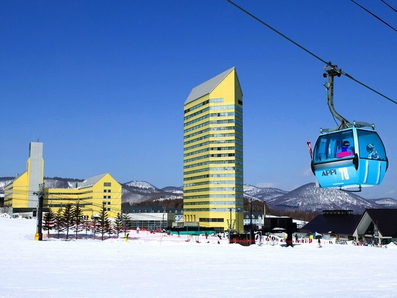
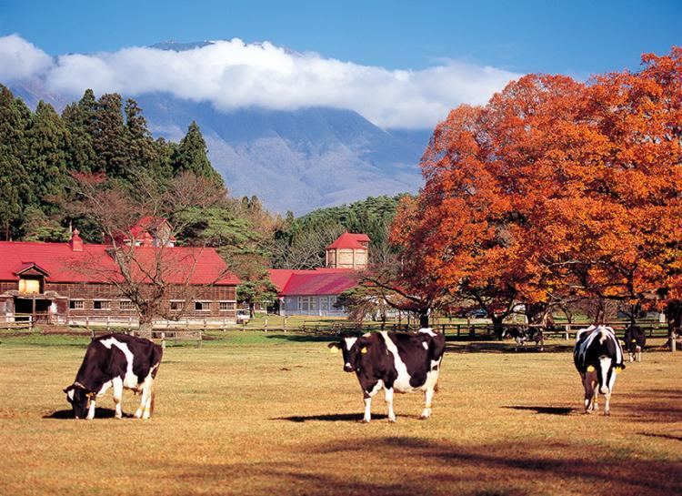
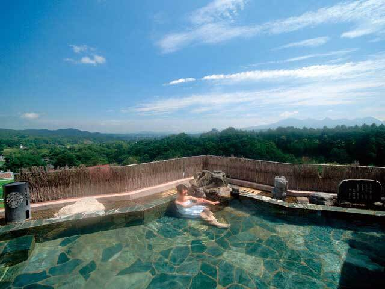

|
岩手県のスキー場といえばまず出てくるのは、八幡平市にある安比高原スキー場でしょう。 安比高原スキー場は、ゲレンデ総面積282ha、全21コースもある東北屈指のビッグゲレンデというところが特徴です。 人気のスキー場ですので、ぜひ行ってみてください。 |
 |
| 小岩井農場まきば園は雫石町にある東京ドーム640個分の約3000haもある広大な農場です。 農場に入ると牛や馬、羊などの動物と触れ合えたり、大きな遊具で遊ぶことが出来ます。冬季期間は期間限定でイルミネーションを行っています。 地方に訪れる有名人も行くほどの施設ですので岩手に来たら行ってみてはいかがでしょうか？ |  |
| こちらも雫石町にある施設の総称です。 鶯宿温泉はその一帯にある温泉をまとめた言い方で、いくつかの温泉をまとめて鶯宿温泉と言います。日帰りでも十分楽しめますが旅館やホテルに宿泊するとより楽しめると思います。 ぜひ宿泊してみてはいかがでしょうか？ |  |